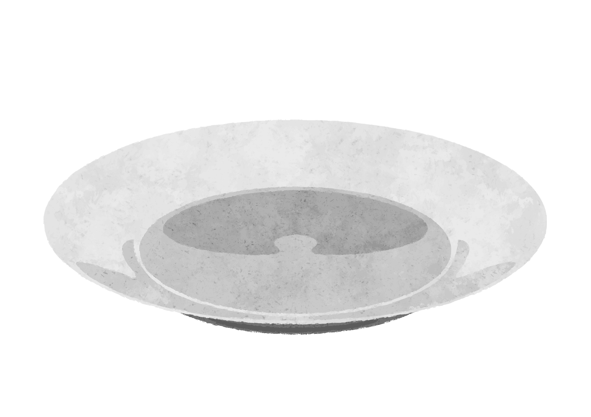
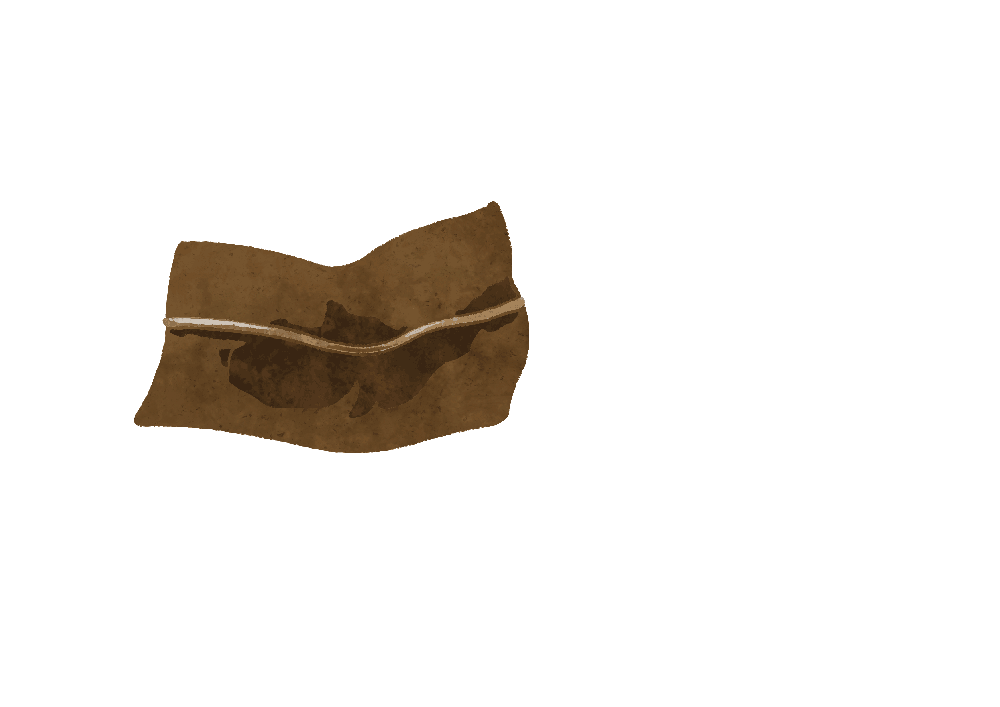
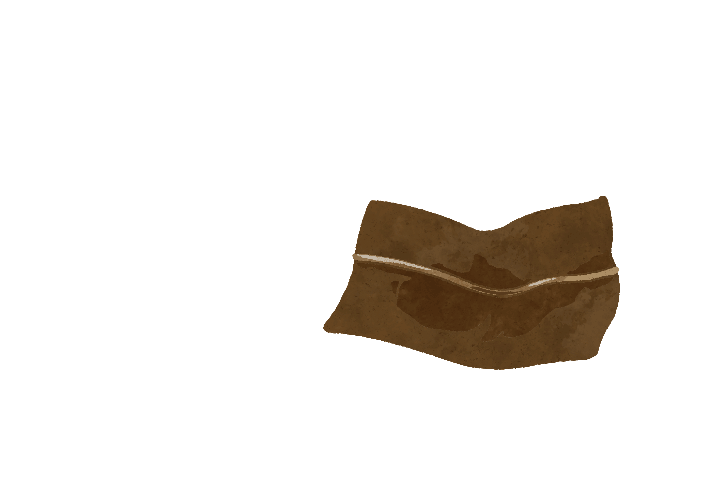
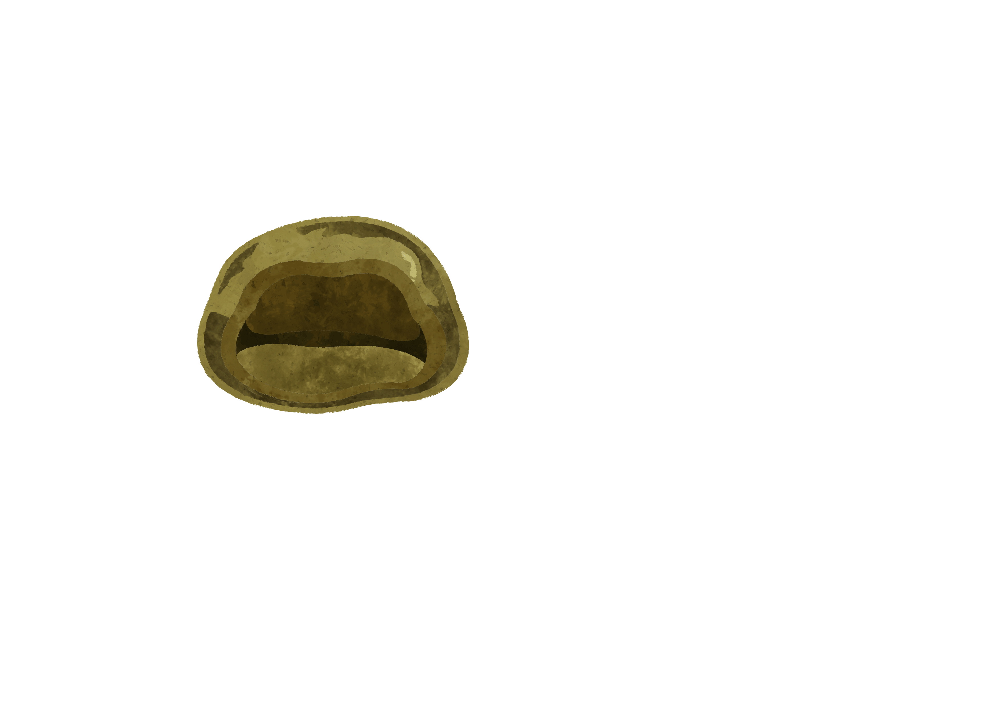
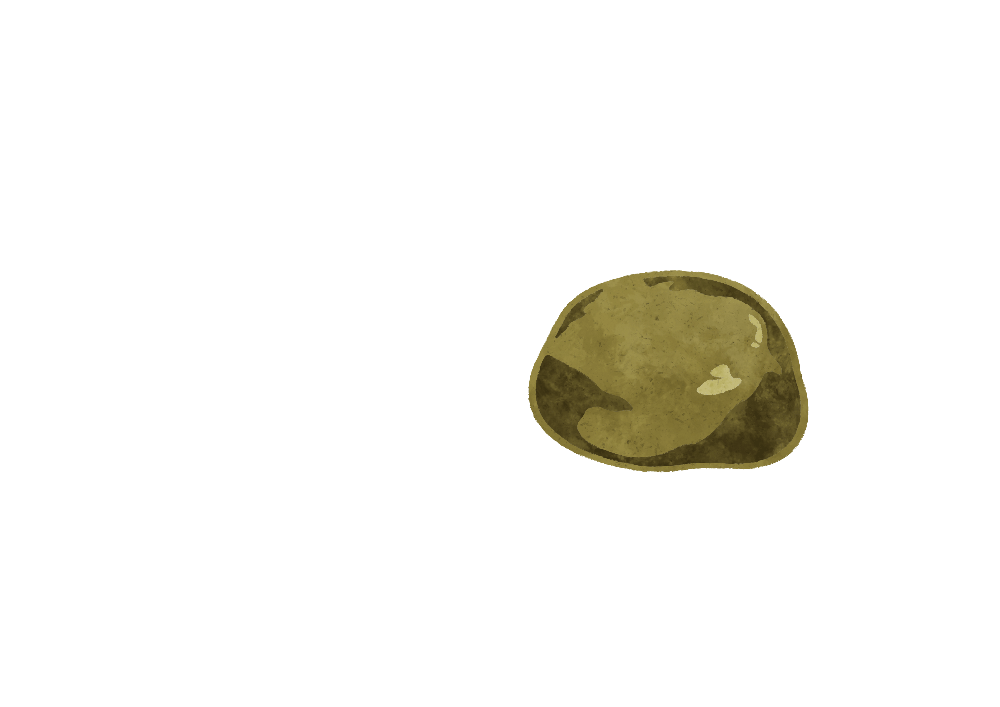
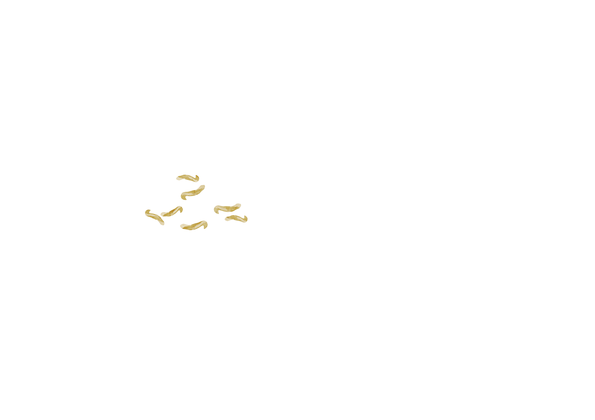

よもぎ餅
草仔粿


台湾の清明節によく見られるお供え、ハハコグサやよもぎで作られている皮に、たくあん、挽肉などの具材を包んでいる伝統的なグルメ。
是台灣清明節常見的祭拜品。粿皮是由鼠麴草或是艾草製成，帶這一點淡淡的草香，而內餡會包進菜脯等食材，鹹香好吃。



───── 盤子．お皿
───────── 葉片．葉
─────────── 粿皮．生地
──────────── 菜脯．たくあん
───────────── 蝦米．干しエビ
─────────── 香菇片．しいたけ
──────────── 豬肉．挽肉
─────────────── 紅蔥頭．エシャロット